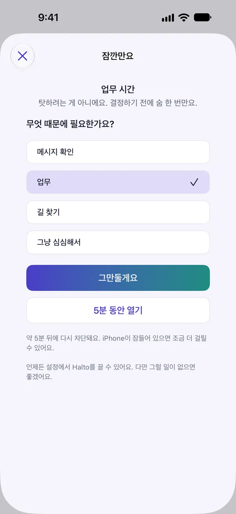
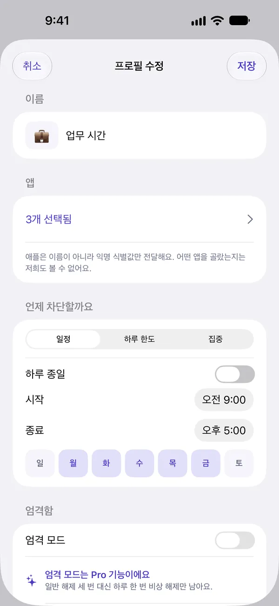
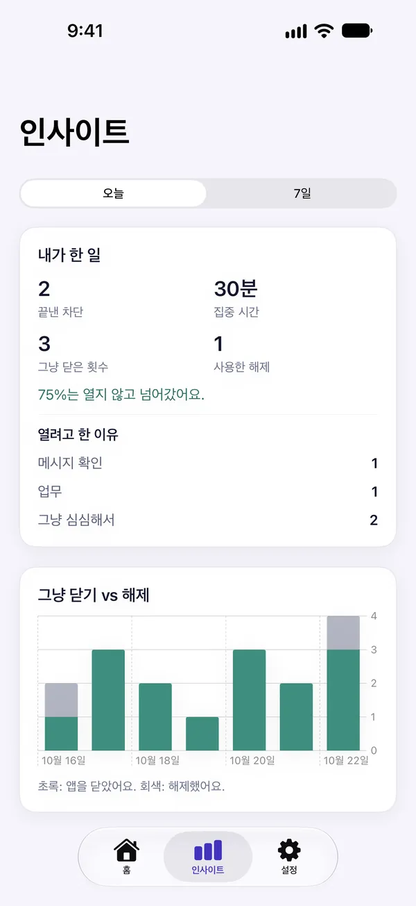
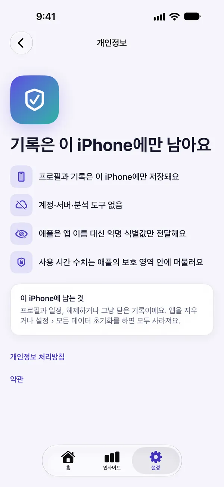

손이 먼저 가는 앱,
시간 정해 막기
SNS와 숏폼처럼 하루를 잡아먹는 앱을 정한 시간에, 하루 한도가 차면, 또는 지금 바로 막아요. 꼭 필요할 땐 잠깐 멈춘 뒤 몇 분만 열 수 있어요.
업무 시간·잠들기 전·평일만
정한 시간을 쓰면 차단
지금부터 잠시 막아 두기
골라서 함께 차단
막아 두되,
가두지 않아요
고른 앱을 열면 차단 화면이 먼저 떠요. 그대로 앱을 닫거나, '꼭 필요해요'를 눌러 잠깐 생각할 시간을 가질 수 있어요.
- 앱·카테고리·사이트를 골라 차단
- 차단 화면은 미리 보기로 확인 가능

열기 전에
숨 한 번
차단 화면에서 '꼭 필요해요'를 누르면 알림을 통해 Halto의 멈춤 화면이 열려요. 15초 동안 숨을 고르고 무엇 때문에 필요한지 고른 뒤 5분만 열어요. 마음이 바뀌면 '그만둘게요'를 누르면 돼요.
- 15초·5분·하루 3번은 기본값, 설정에서 바꿀 수 있어요
- 해제 시간이 끝나면 다시 차단
내 시간표대로
업무 시간, 잠들기 전, 평일만. 프로필마다 막을 앱과 시간을 묶어 두면 그 시간에 Halto가 차단해요. 자정을 넘겨 다음 날 아침까지 이어지는 일정도 만들 수 있어요.
- 일정·하루 한도(Pro)·집중 중에서 선택
- 엄격 모드로 해제를 더 어렵게(Pro)


그냥 닫은 순간을
세어요
대부분의 앱은 잃어버린 시간을 세요. Halto는 잠금을 풀지 않고 그냥 닫은 횟수를 세요. 습관이 실제로 바뀌는 순간이니까요.
- 열려고 한 이유와 해제 횟수를 한눈에
- 월요일 아침 주간 요약 알림, 원할 때만
세 단계면 시작해요
차단 권한 허용
앱을 막으려면 iOS의 권한이 필요해요. 애플은 앱 이름 대신 익명 식별값만 전달해요.
앱과 시간 고르기
막을 앱·카테고리·사이트와 시간을 골라 프로필을 만들어요.
닫고, 넘어가기
차단 화면에서 앱을 닫을 때마다 인사이트에 기록돼요.
아무것도 폰 밖으로
나가지 않아요
Halto에는 계정도, 서버도, 분석 도구도, 외부 SDK도 없어요. 일정과 이유, 기록은 모두 이 iPhone 안에만 있어요.
애플은 고른 앱의 이름 대신 익명 식별값만 전달해요. 어떤 앱을 골랐는지 저희도 볼 수 없어요.
사용 시간 그래프는 애플이 보호된 영역 안에서 직접 그려요. 앱은 그 숫자를 받지 않아요.
App Store 개인정보 라벨: 데이터 수집 안 함.
설정 › 모든 데이터 초기화, 또는 앱을 지우면 모두 사라져요.

무료로 시작하고,
필요할 때만 Pro
프로필 하나와 하루 집중 세션 3번은 기간 제한 없이 무료예요. 더 필요할 때 Pro를 고르세요.
무료
- 프로필 1개 (일정 또는 집중)
- 하루 집중 세션 3번
- 오늘의 리포트와 주간 요약
- 실시간 활동과 위젯
Halto Pro 연간
- 프로필 무제한·하루 한도·엄격 모드
- 오늘 이전의 인사이트 기록
- 언제든 해지
Halto Pro 평생
- Pro 기능 평생 이용
- 갱신 결제 없음
구독은 기간이 끝나기 24시간 전까지 해지하지 않으면 자동으로 갱신되고, 결제는 Apple 계정으로 청구돼요. 해지는 설정 › Apple 계정 › 구독에서 할 수 있어요. 앱 안에서 주간 요금제(₩5,500, 매주 갱신)도 선택할 수 있어요. 가격은 국가별로 다를 수 있어요.
궁금한 점
정말 못 끄나요?
끌 수 있어요. iOS에서는 언제든 설정에서 Halto의 차단 권한을 끄거나 앱을 지울 수 있고, Halto는 이 사실을 숨기지 않아요. 대신 엄격 모드(Pro)를 켜면 일반 해제가 꺼지고 하루 한 번 비상 해제만 남아요. 엄격 모드가 차단 중일 때는 그 프로필을 수정하거나 끄거나 삭제할 수 없고, 비상 해제를 쓰고 나면 일정이 끝날 때까지 차단이 유지돼요.
꼭 필요할 땐 어떻게 여나요?
차단 화면에서 '꼭 필요해요'를 누르면 알림이 와요. 알림을 누르면 Halto의 멈춤 화면이 열리고, 15초 동안 숨을 고른 뒤 이유를 고르면 5분 동안 열 수 있어요. 해제는 기본 하루 3번이고, 멈춤 시간·해제 시간·횟수는 설정 › 해제 기본값에서 바꿀 수 있어요.
제가 어떤 앱을 쓰는지 Halto가 알 수 있나요?
아니요. 애플은 고른 앱의 이름 대신 익명 식별값만 전달하고, 사용 시간 수치는 애플의 보호된 영역 안에서만 그려져요. Halto에는 계정도 서버도 없어서 어떤 기록도 밖으로 보내지 않아요.
무료로 어디까지 쓸 수 있나요?
프로필 1개(일정 또는 집중), 하루 집중 세션 3번, 오늘의 리포트와 해제 이유, 주간 요약 알림, 실시간 활동과 위젯은 무료예요. 프로필 무제한, 하루 한도, 엄격 모드, 오늘 이전의 인사이트 기록은 Pro에서 쓸 수 있어요.
정해진 시각에 딱 맞춰 막히고 풀리나요?
초 단위로 정확하지는 않아요. iOS는 기기를 사용할 때 Halto를 깨우기 때문에 차단이나 해제가 조금 늦을 수 있어요. 해제 시간이 끝나면 다시 막히지만, iPhone이 잠들어 있으면 조금 더 걸릴 수 있어요.
구독은 어떻게 해지하나요?
설정 › Apple 계정 › 구독, 또는 앱 안의 '구독 관리'에서 언제든 해지할 수 있어요. 체험이나 구독 기간이 끝나기 24시간 전까지 해지하면 결제되지 않아요. 원하면 체험이 끝나기 24시간 전에 알림을 한 번 받을 수 있어요.
내 시간을 되찾으세요
곧 App Store에서 만나요.